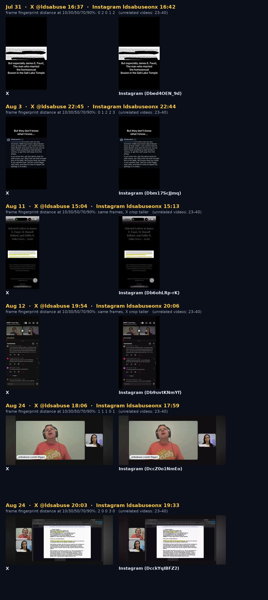
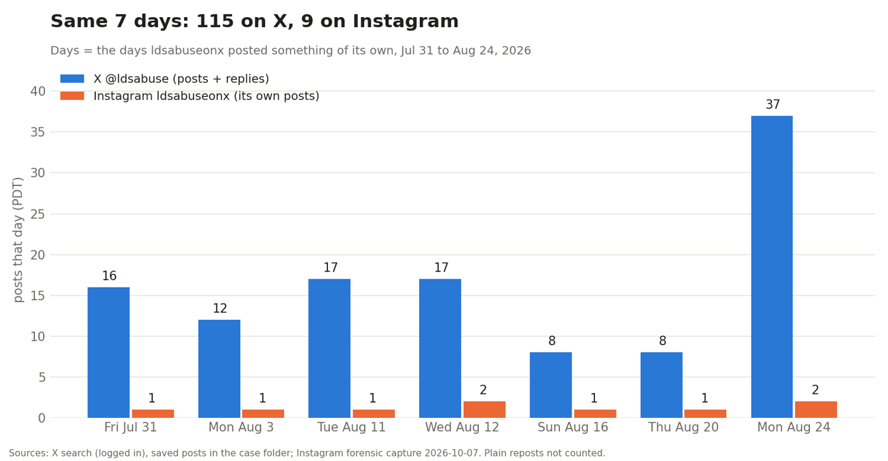
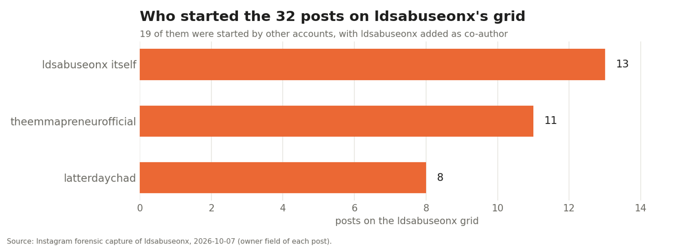
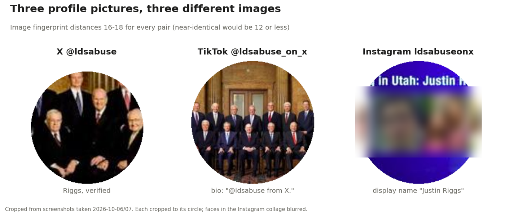

An Instagram account called ldsabuseonx calls itself "Justin Riggs." On X, Justin Riggs posts as @ldsabuse. We compared the files and metadata the two accounts actually published, on the same days, with rules fixed in advance.
We bet they shared nothing. The files called our bluff: six times in four weeks, the same video landed on both, 1 to 30 minutes apart.
On the surface they look like one person's two accounts. The Instagram account's display name is "Justin Riggs" and its bio says "I'm @ldsabuse on X." Its first post (June 1, 2024) links an @ldsabuse X post from that evening. It posts in the months Riggs appears on The Imagination Podcast, and it covers his subjects.
All of that is surface: the account describing itself, or timing and topic. The prediction we recorded before collecting the Instagram data was that their actual posts would share nothing. This page is the test.
Before a single Instagram file was collected, the person running this case wrote it down with a timestamp: these two accounts have nothing to do with each other. It was a low-cost wager. It was also wrong six times. He asked us to say so, and to have some fun with it, so: the files won, the boss lost, and the boss is buying.
The AI helping out doesn't get to gloat. Its own guess (about 70 X posts on those seven days) came in at 115.
On the 7 days in July and August when ldsabuseonx posted something of its own, it made 9 posts. Six of them are the same video @ldsabuse posted on X that day.
| Day (PDT) | X @ldsabuse | ldsabuseonx | Instagram post | Gap | Length X / IG |
|---|---|---|---|---|---|
| Jul 31 | 16:37 | 16:42 | Dbed4OEN_9d | 5 min | 43.77 / 43.81 s |
| Aug 3 | 22:45 | 22:44 | Dbm17ScJJmq | 1 min | 18.02 / 18.09 s |
| Aug 11 | 15:04 | 15:13 | Db6ohLRp-rK | 9 min | 52.36 / 52.40 s |
| Aug 12 | 19:54 | 20:06 | Db9uvtKNmYf | 13 min | 107.76 / 107.83 s |
| Aug 24 | 18:06 | 17:59 | DccZ0o1NmEo | 7 min | 136.90 / 136.87 s |
| Aug 24 | 20:03 | 19:33 | DcckYqIBFZ2 | 30 min | 229.51 / 229.47 s |
"Same" means: lengths agree within 0.1 s; frames taken at the same moments have image fingerprints 0–3 apart (unrelated videos score 23–40); two pairs cropped to a different shape are visibly the same frames. Both platforms re-encode uploads, so identical bytes aren't expected and none were found.

The Aug 3 video is a screen recording of a comment made by the account ldsabuseonx, signed in Riggs's name. @ldsabuse posted it on X at 22:45. ldsabuseonx posted the same video at 22:44.
The handle of the person being replied to is blurred; they aren't part of this story.
A 60-second reel (Aug 12), a 4-second clip with no speech (Aug 16) and a photo (Aug 20). The closest X media from those days is 18–25 away. One more X video (Aug 20) happened to have the same length as an Instagram reel; checked frame by frame against every reel, it is a different video.
Only his posts and replies from the same days were checked. A version posted on another day, or as a plain repost, wouldn't show up here.

| X @ldsabuse | Instagram ldsabuseonx | |
|---|---|---|
| Created | June 2017 | June 2024 |
| Size | 32.9K posts, 6,462 followers | 32 posts, 702 followers |
| Format | text, replies, links | edited clips with title cards |
| Riggs's main Instagram | named ldsabuse (Instagram's own email in his Apr 12 X post) | |


Whoever runs ldsabuseonx had Riggs's own video files and posted them within minutes of him, 6 times on 5 days. That is Riggs or someone working directly with him; a copycat wouldn't keep that pace.
It isn't simply his Instagram. His main account has another name, most of its grid (19 of 32) comes from posts two network accounts started, and it posts a fraction of what he does, in another format.
Who types the posts on ldsabuseonx. That isn't visible from outside.
bin/compare_x_ig.py (mimesis toolkit). Words were left out by choice; files and metadata answered the question.mimesis is an open toolkit for comparing sources: transcripts, videos, posts. Everything on this page came from one script with a chain of custody built in.
Saves each post exactly as served, plus its photos and videos, hashing every file.
compare_x_ig.py fetch-x CASE --ids ids.tsv
compare_x_ig.py fetch-x-media CASECopies a forensic capture and its media in, without touching the originals.
compare_x_ig.py add-ig CASE --capture DIR --media DIR…ffprobe and EXIF inventory, identical bytes, matching lengths, shared encoder tags. Re-hashes every input first.
compare_x_ig.py files CASEImage fingerprints, shared phrases and links, with a same-day vs other-day control. Rules fixed in code.
compare_x_ig.py compare CASECode and tests: github.com/roadshowpractice/mimesis · this case's public data: data/ · Round 3 (T5, Grok's test, published before it runs): round3/ · the mimesis toolkit